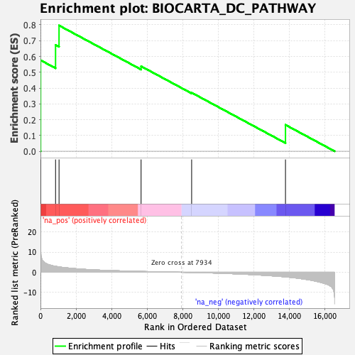
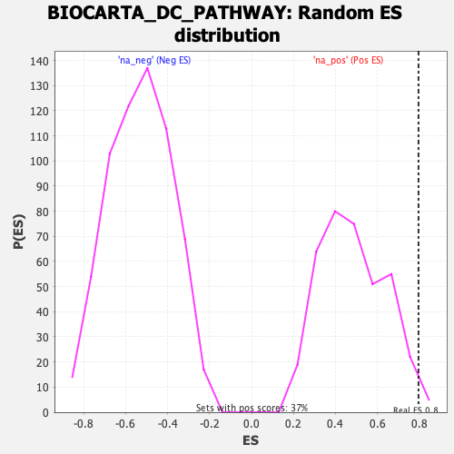

| | | Dataset | DE_genes2 |
| Phenotype | NoPhenotypeAvailable |
| Upregulated in class | na_pos |
| GeneSet | BIOCARTA_DC_PATHWAY |
| Enrichment Score (ES) | 0.7960892 |
| Normalized Enrichment Score (NES) | 1.6397622 |
| Nominal p-value | 0.013477089 |
| FDR q-value | 0.20275278 |
| FWER p-Value | 0.846 |
Table: GSEA Results Summary

Fig 1: Enrichment plot: BIOCARTA_DC_PATHWAY
Profile of the Running ES Score & Positions of GeneSet Members on the Rank Ordered List
| PROBE | GENE SYMBOL | GENE_TITLE | RANK IN GENE LIST | RANK METRIC SCORE | RUNNING ES | CORE ENRICHMENT | | 1 | CSF2 | | | 8 | 11.489 | 0.5762 | Yes |
| 2 | CD40 | | | 848 | 2.943 | 0.6731 | Yes |
| 3 | CD7 | | | 1044 | 2.686 | 0.7961 | Yes |
| 4 | IFNA1 | | | 5655 | 0.414 | 0.5379 | No |
| 5 | ANPEP | | | 8496 | -0.092 | 0.3707 | No |
| 6 | ITGAX | | | 13770 | -2.300 | 0.1671 | No |
Table: GSEA details [plain text format]

Fig 2: BIOCARTA_DC_PATHWAY: Random ES distribution
Gene set null distribution of ES for BIOCARTA_DC_PATHWAY